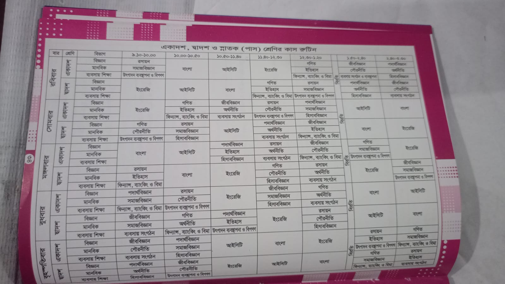

চুনারুঘাট সরকারি কলেজ
কলেজের ক্লাস রুটিন
একাদশ, দ্বাদশ ও স্নাতক (পাস) শ্রেণির ক্লাস রুটিন। এটি পরীক্ষার রুটিন বা ব্যক্তিগত পড়ার রুটিন নয়।
তথ্য পরিবর্তিত হতে পারে; সর্বশেষ তথ্যের জন্য কলেজের নোটিশ দেখো।
ক্লাস রুটিন
দিন, শ্রেণি ও বিভাগ অনুযায়ী রুটিন দেখতে ছবিটি বড় করো বা ডানে-বাঁয়ে সরাও।
প্রকাশের সময় বা কার্যকারিতা ছবিতে নিশ্চিত নয়—কলেজের সর্বশেষ রুটিনের সঙ্গে মিলিয়ে নাও।
📖 বইয়ের মূল ছবি দেখো
একাদশ, দ্বাদশ ও স্নাতক (পাস) শ্রেণির ক্লাস রুটিন; বইয়ের পৃষ্ঠা ৪৬

বড় করে মূল ছবি খোলো ↗ · টেবিল দেখতে ডানে-বাঁয়ে সরাও